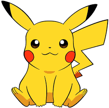

Pokémon, electronic game series from Nintendo that debuted in Japan in
February 1996 as Pokémon Green and Pokémon Red. The franchise later
became wildly popular in the United States and around the world. The
series, originally produced for the company’s Game Boy line of handheld
consoles, was introduced in 1998 to the United States with two titles,
known to fans as Red and Blue. In the games, players assume the role of
Pokémon trainers, obtaining cartoon monsters and developing them to
battle other Pokémon. Pokémon became one of the most successful video
game franchises in the world, second only to Nintendo’s Super Mario
Bros.


Ash Ketchum is the main protagonist of Pokémon the Series. He is a
10-year-old Pokémon Trainer from Pallet Town in the Kanto region who has
always dreamed of becoming the world's greatest Pokémon Master. The
first human character to be introduced in the series, he is the winner
of the Orange League and Kanto Battle Frontier and also the Alola
region's Pokémon Champion, receiving the title after winning its first
Pokémon League Conference. He is also one of the 8 best trainers in the
Pokémon World after defeating Raihan and reached Master Class in the
World Coronation Series.
Gary Oak is a character appearing in Pokémon the Series. He is the
grandson of Professor Oak and the rival of Ash Ketchum in the first few
seasons. His Starter Pokémon was a Squirtle, later evolving into a
Blastoise. He wears a long purple shirt, dark gray pants, a yin and yang
necklace, and brown boots with black straps encircling them.
Occasionally, he wears a brown cloak during his travels.
More About Pokemon
Any Doubt or Feedback